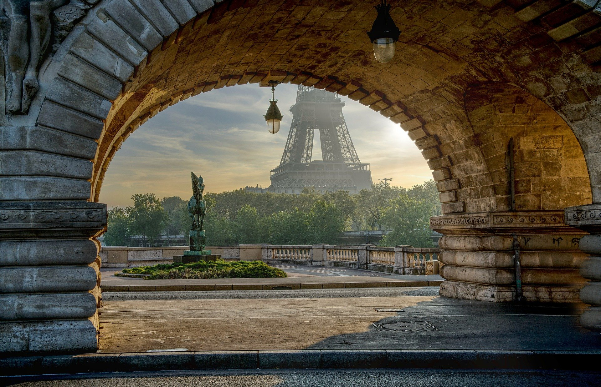

Some figures about our actions in Paris
- 278 910 parisians have at least 1 square meter of land in one of garden
- 85% - Costs of food had drop about 85% for those who fully experience our gardens.
- 504 homeless parisians pick up their food in our gardens, without any costs.
Where it all begin 🥰
As a student at the IESEG School of Management and mobilized for the preservation of the environment, my ambition is to revolutionize the way of consuming vegetables. I was fully immersed in sustainable development and realized that there was a huge opportunity to seize, financially but above all humanly
The ambitious bet of Marseille
The creeks of Marseille frankly the most beautiful landscapes of France, unfortunately they are devastated by pollution and in particular plastic bags. With our organic vegetable garden, you no longer need a plastic bag for what you are going to harvest yourself thanks to a basket given for free. We ought to preserv our nature, and it all begin in our plates